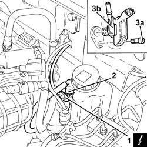

3330D48 Vacuum SENSOR on brakeservo RR
- Path
- Procedures > 33 BRAKING SYSTEM > 3330 HYDRAULIC BRAKING SYSTEM > 3330D BRAKE VACUUM SYSTEM > 3330D48 Vacuum SENSOR on brakeservo RR
- Kind
- repair procedure (removal / refitting; the operation number is the code)
- Applies to
- engines: 1.8 T.SPARK, 2.0 JTS; all production periods
- Interactive page
- https://sloeber94.github.io/elrnDB-aGt/en/#/125001355
Applies to: engines: 1.8 T.SPARK, 2.0 JTS; all production periods
 Removing
Removing
 Refitting
RefittingEnsure that the ignition key is in OFF position, then disconnect the battery negative terminal (-).
Name | Connector | |
|---|---|---|
- | Battery | See A1B BATTERY ( BATTERY NEGATIVE ) |
1. Disconnect the electrical connection from the vacuum sensor on the brake servo.
Name | Connector | |
|---|---|---|
1 | Brake servo vacuum unit sensor | See K105 BRAKE SERVO VACUUM UNIT SENSOR |
2. Disconnect the rapid connector for the vacuum pipe from the pressure sensor on the brake servo.
3. Undo the bolt (3a) and remove the vacuum sensor on the brake servo (3b).

Applies to: engines: 1.8 T.SPARK, 2.0 JTS; all production periods
Refitting
RemovingPlace the vacuum sensor back in its housing on the brake servo and secure it using the bolt.
Connect the rapid connector for the vacuum pipe to the pressure sensor on the brake servo.
Connect the electrical connection to the vacuum sensor on the brake servo.
Connect the negative (-) battery terminal